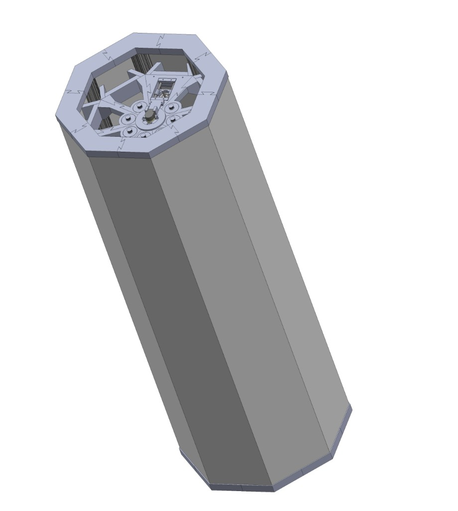
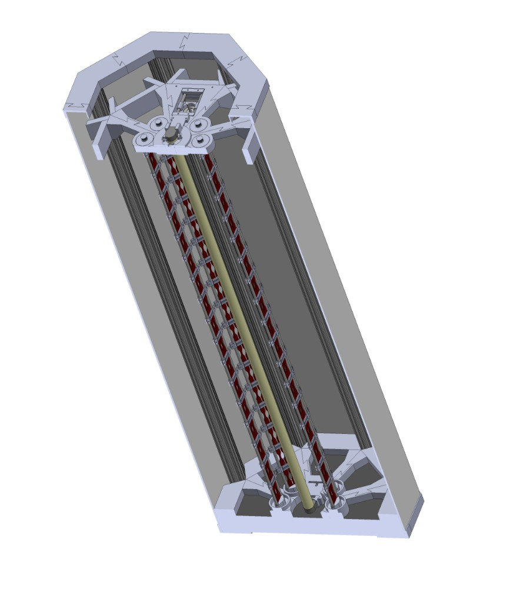
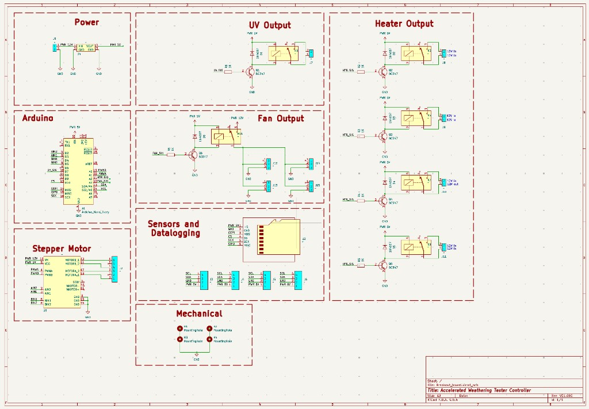
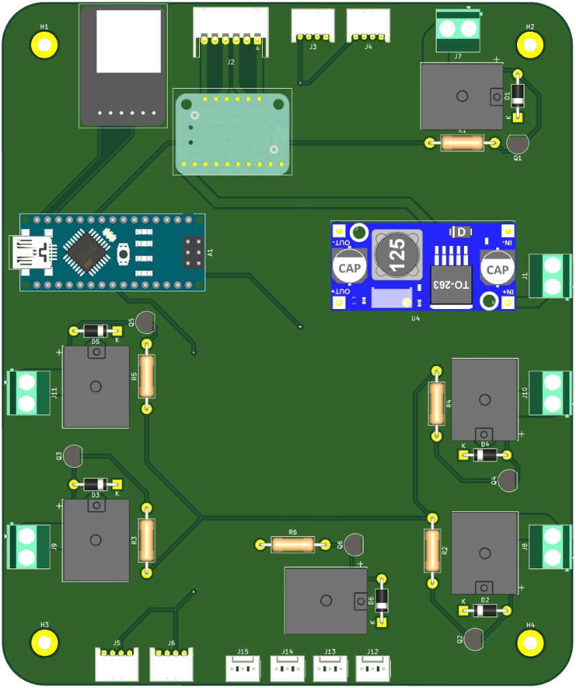
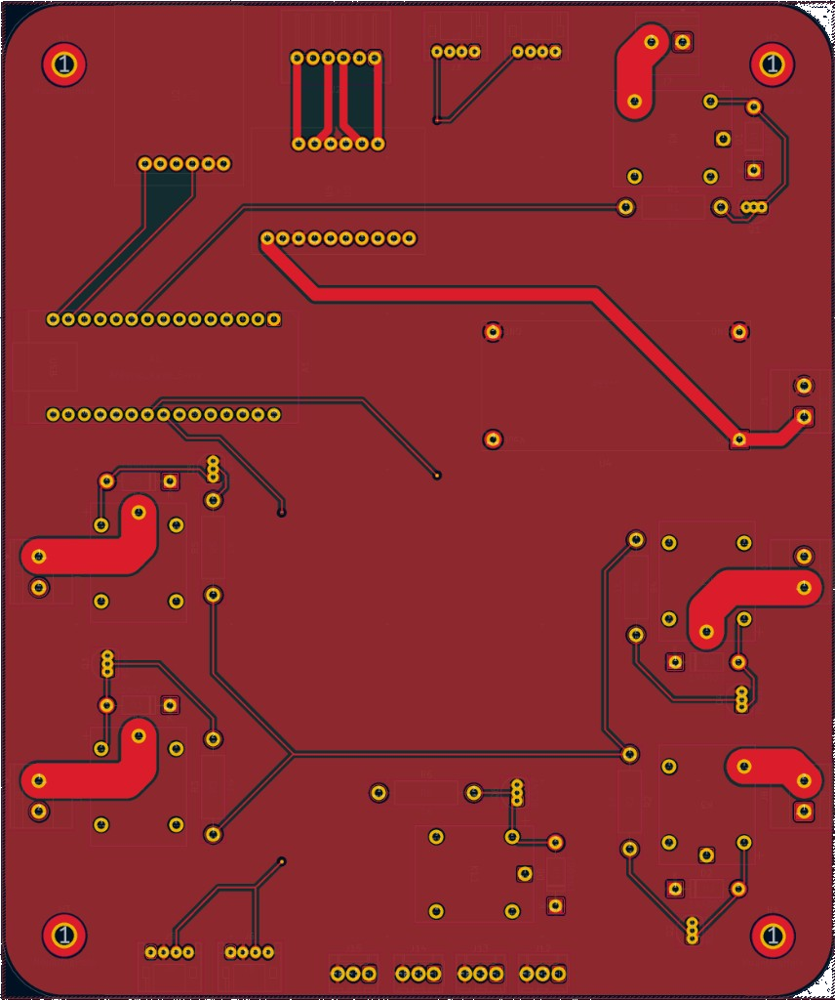

Mechatronics · Materials · PCB
Accelerated Weathering Chamber
Automated ASTM G151/G154 weathering chamber for PLA composite filament, including a custom Arduino Nano control PCB for heaters, UV, fans, and sensors.


Overview
Built an automated chamber that degrades experimental PLA composite filament to simulate prolonged outdoor exposure per ASTM G151/G154 — mechanical enclosure, electrical subsystem, control firmware, and a custom PCB so an Arduino Nano can run heaters, UV lamp, fans, and sensors with minimal human interaction.
Notable features
- Closed-loop heat control with day/night heat and condensation cycles
- Automated UV, temperature, and humidity exposure
- Plywood enclosure with 3D-printed PET-G end caps
- Custom Arduino Nano control PCB (KiCad) for heaters, UV, fans, and sensors
- Through-hole/breakout-friendly layout for simple assembly
- I2C sensor interface and micro SD logging over SPI
- Panel-mount controller alongside the power supply
- Capable of degrading hundreds of Type V ASTM D638 samples at once
Project details (Situation · Task · Action · Result)
Situation
Needed to degrade an experimental PLA composite filament to simulate prolonged outdoor exposure in a short time, per ASTM G151/G154 — and a control module for heaters, UV lamp, fans, and sensors that prioritized ease of assembly.
Task
Expose filament to extreme temperature, humidity, and UV light with minimal human interaction, and design a PCB allowing full chamber control with accessibility as a priority.
Action
Electrical: Designed electrical subsystem in KiCad; used Arduino Nano and relays to control/interface with sensors, heaters, and UV lamp. Designed a custom control PCB so the Nano could interface with several I2C sensors, log to a micro SD card over SPI, and drive multiple heaters, fans, and a UV light — panel-mounted alongside the power supply.
Mechanical: Designed mechanical subsystem in SolidWorks; cut plywood enclosure with power tools; 3D-printed PET-G end caps.
Software: Programmed controller in C++ with closed-loop heat control, day/night heat/condensation cycles, datalogging, and full automation.
Result
1.2m tall, 0.4m diameter prototype capable of degrading hundreds of Type V ASTM D638 samples simultaneously. Enabled a full test run that successfully degraded PLA filament samples over a month per ASTM G151/G154.
Accelerated Weathering Chamber Controller
Custom control PCB enabling an Arduino Nano to manage the chamber’s heaters, UV lamp, fans, and sensors — built for easy assembly and panel mounting.



Overview
A control module for heaters, UV lamp, fans, and sensor interfacing, with accessibility as a priority so the system is as easy to bring up as possible.
Notable features
- Maximized through-hole and breakout components for simple assembly
- Arduino Nano interfaces with several I2C sensors
- Micro SD datalogging over SPI
- Relay control for multiple heaters, fans, and a UV light
- Designed to mount with the power supply on a chamber panel
- Schematic and layout designed in KiCad
Project details (Situation · Task · Action · Result)
Situation
The goal was to degrade an experimental PLA composite filament in a way that simulates prolonged outdoor exposure in a short period of time according to ASTM standards G151 and G154.
Task
Design a control module to control the heaters, UV lamp, and fans, and to interface with sensors. Accessibility was a priority, so the control system needed to be as easy to bring up as possible.
Action
Designed a PCB that allows an Arduino Nano to control the entire chamber by interfacing with several I2C sensors, datalogging to a micro SD card over SPI, and controlling several heaters, fans, and a UV light. The PCB was designed to be mounted with the power supply on a panel attached to the chamber.
Result
The finished control system allowed for a full test run, degrading the composite PLA filament samples effectively over the course of a month according to ASTM G151 and G154 standards.